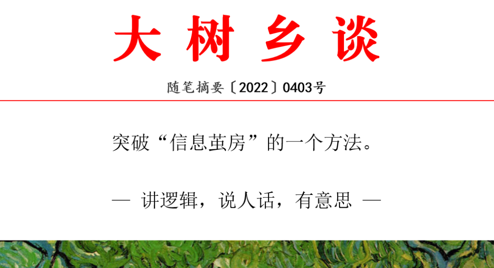

方法论：突破“信息茧房”，让工具为我所用

信息茧房是我们每一个想要持续成长必须面对的问题，但事物有两面性，我们完全可以利用信息茧房的技术基础来帮助我们成长。 比如很多人非常警惕的抖音和推荐算法。 抖音是一个非常容易上瘾、非常容易导致信息茧房的工具，而且由于快速切换对人意志力和关注力的消耗特别大，往往让人不知不觉间损失大量时间还搞得特别疲劳。 但小镇其实很喜欢用抖音，之前还分享了小镇如何用抖音快速了解一个城市，可以看看旧文《如何冲破重围，获得真实信息》。今天还拿小镇使用抖音的方法来举例如何突破“信息茧房”，更为我所用。
但话说在前面，这需要一定的控制力，更需要比较长时间的坚持，如果没有把握，卸载抖音等碎片化信息工具可能更有帮助，但诱惑太多，逃避不是办法，如何抉择就看个人了。 小镇特别喜欢同大家交流，也特别喜欢看抖音，就是因为可以看到更加真实的人间百态。其实推荐算法是很好用的工具，从2018年开始，小镇用了4年抖音，小镇的抖音账号已经成了一个非常有效的搜集各方意见的工具，态度相对中立，而且小镇还专门关注了平时不容易接触的人，可以加强小镇对整个社会的认知，避免跑偏。
举几个例子吧。 比如一家三代在北京打拼，妻子跑网约车、丈夫跑外卖，公公当保安、婆婆看孩子等等，看看他们每天的生活，看看他们如何屡屡创业失败后仍然坚持奋斗。 又比如一位汶川地震痛失一条腿的小女孩，她非常乐观的面对生活，坚持跑汶川马拉松，还要为中国数千万残疾人发声。 还有共享单车一线运维、代驾、专门送深夜外卖的外卖员、大货车司机、志愿者等等，当然也包括各领域专家学者、各行业从业人员等等，这为小镇提供了非常多样、更接近现实的体系。
除了刻意关注不同人群以外，小镇还做了几件事： 一是利用好平台给的工具。
对于一些明显三观不正、释放垃圾信息的，直接“拉黑”这个账号。
现在平台也更新了新的功能，比如之前很多人建议增加“不感兴趣”的功能，现在长按之后能看到两个快捷选项：一个是“不看该作者”，另一个是“不感兴趣”。对于一类东西选择“不感兴趣”多了，系统就明白偏好了，自然也不一样了。 二是多看留言。
小镇看抖音，除了一些就是纯娱乐的以外，凡是涉及到社会现象、新的知识等内容的，一定要打开留言，甚至看留言的时间要比看视频还要长，还会做记录。
抖音的留言是根据点赞多少排序的，这正代表了民意倾向，比如对疫情防控，在不同阶段对于防控措施的态度是不同的，最近的变化特别明显，这对于了解社会动态非常有帮助。 再比如一些讨论产业和新领域的，很多留言是非常有价值的，从不同的视角可以获得更多的信息，不论正确与否，都可以丰富我们的认知体系。常说的信息过载主要是垃圾信息，真正针对一件具体事情的信息反而获知不足。 有了足够的信息，才有了正确思考的基础。 三是控制时间。
短视频等碎片是非常消耗人的，千万别觉得这是纯粹的娱乐，事实上比看书更累人，心里有个度。
当然现在也增加了一些功能，比如可以设置每天累计观看多久就提醒等等。 总之，既然这是一个发展不均衡的世界、既然存在算法推荐导致的“信息茧房”，那就承认现实去人工纠偏。 工具是中性的，区别在于我们如何去运用。但还是要提醒下，没有把握的话一定要慎重，可以先通过其他途径，比如多看书、养成更健康的工作生活习惯，增强个人的自控力、意志力、认知能力之后，再去尝试更有挑战性的工具。 让工具为我所用，本就是一件快乐的事。
其他文章推荐
■ 活着，才有希望
■ 2022年中国房地产政策、房价及个人选择
如果喜欢，还请点赞、“在看”和关注吧 欢迎分享，让更多人发现“大树乡谈”